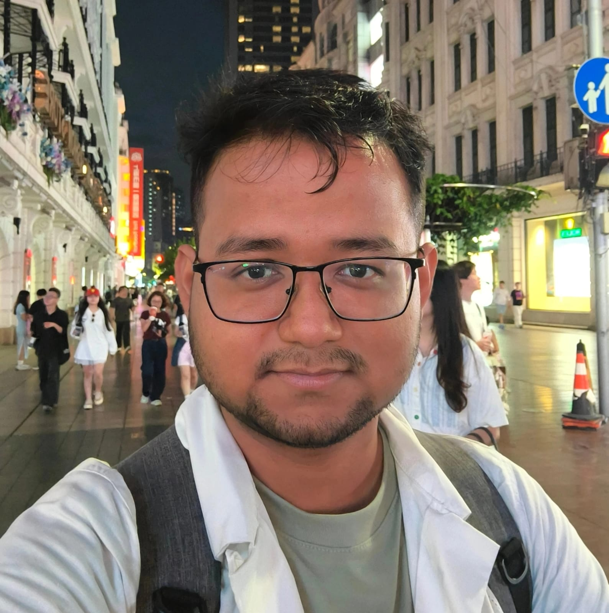

Debasish Dutta
PhD Researcher in Astronomy | Institute of Science and Technology Austria
Stellar Astrophysics
Visualization of a binary star experiencing mass transfer. © Navid Marvi, courtesy of the Carnegie Institution for Science